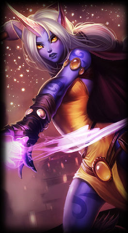
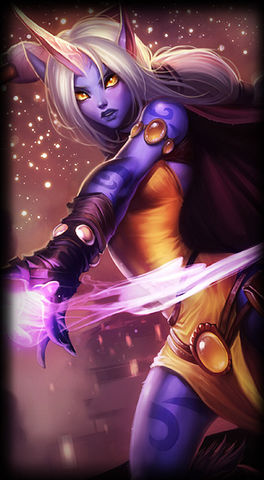

Der Supporter
Der Supporter wird auf der unteren Lane gespielt und ist dazu da den ADC zu unterstützen. Er achtet darauf das sein ADC nicht von den gegner getötet wird und das er auf einen guten Farm kommt. Im späteren verlauf des spiel soll der Support nicht nur seinen ADC beschützen und unterstützen, sonder auch das ganze Team. Die Supporter sind meistens mit vielen Massenkontrolleffekten oder Heilungs- und Verteidigungsfähigkeiten ausgestattet. Die meisten Supporter sind anfangs nicht so stark, aber sie werden im späteren verlauf des Spiel sehr stark.
Die Aufgaben eins Supporters
- Den verbündeten ADC das Farmen ermöglichen
- Nicht selbst den Farm nehmen
- Den gegnerischen ADC vom Farmen abhalten
- Platzieren von Wards und Beobachten der Karte
- Dem verbündeten ADC Tötungen ermöglichen
- Das Team jederzeit unterstützen
Die drei stärksten Supporter

 
